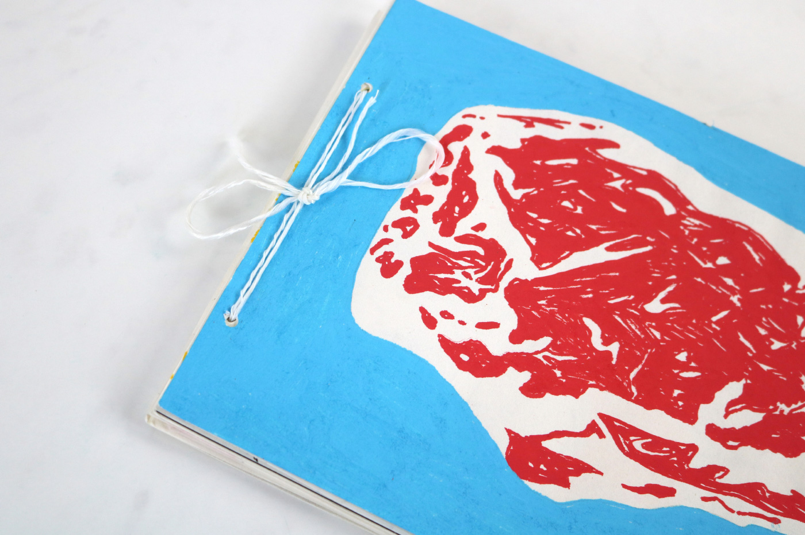
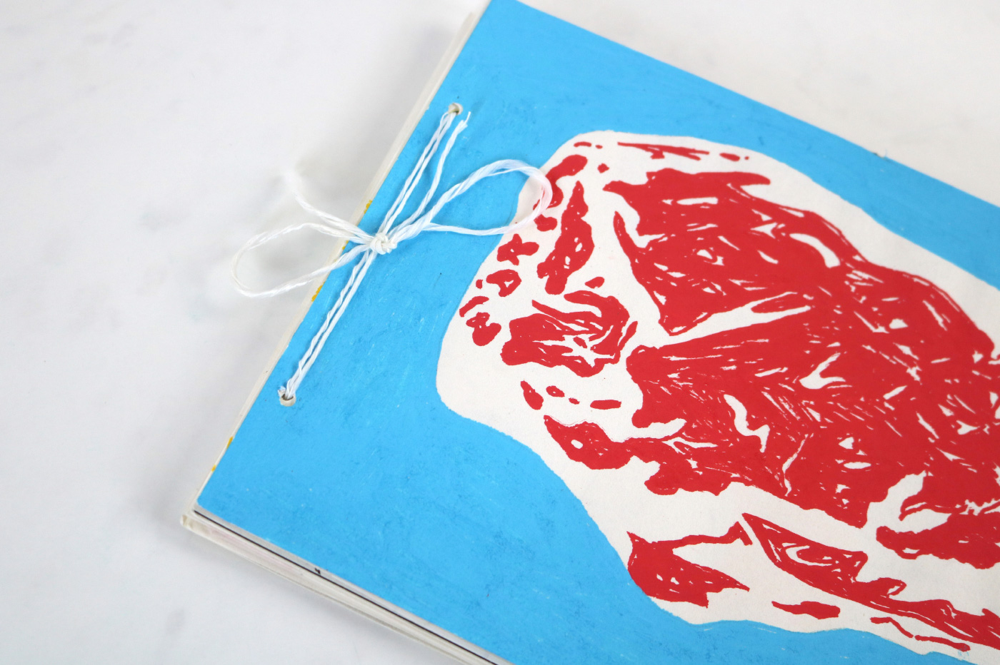

Carnet Délicieux | Illustration
[2024]
Ce carnet expérimental de croquis et d’illustrations s’inscrit sur le thème de la cuisine, des aliments et des ustensiles. Conceptualisé après une période d’observation, il s’inspire de la manipulation et du geste culiniare.
J’ai conçu ce carnet comme un objet narratif et ludique, où chaque détail évoque le monde culinaire. Sa présentation sort des conventions et invite le lecteur à une expérience visuelle et tactile. Chaque page explore le thème de la cuisine à travers des compositions et technniques diverses dans une approche à la fois sensible et inspirante.
 
